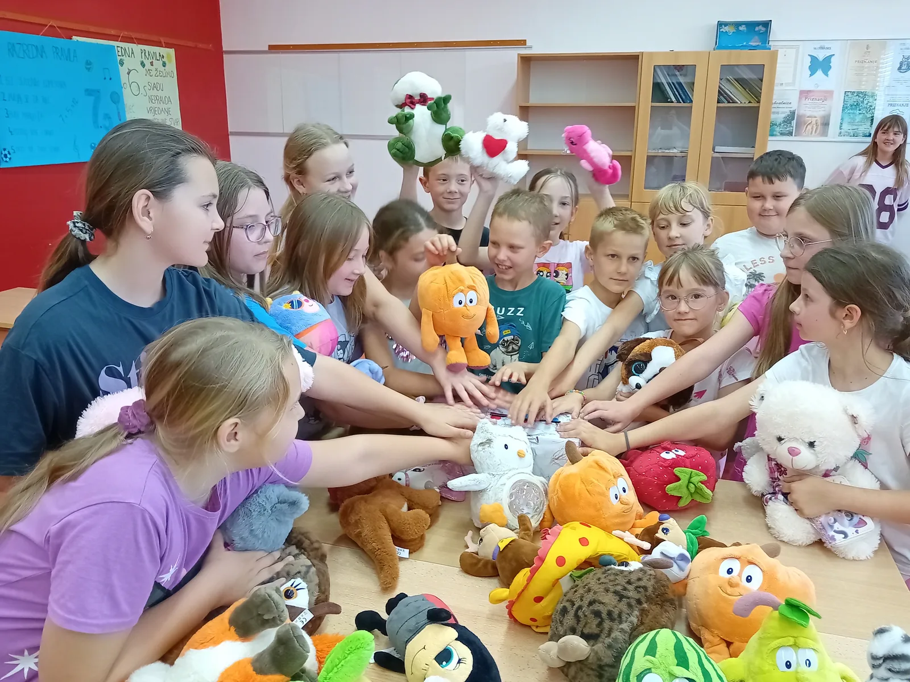
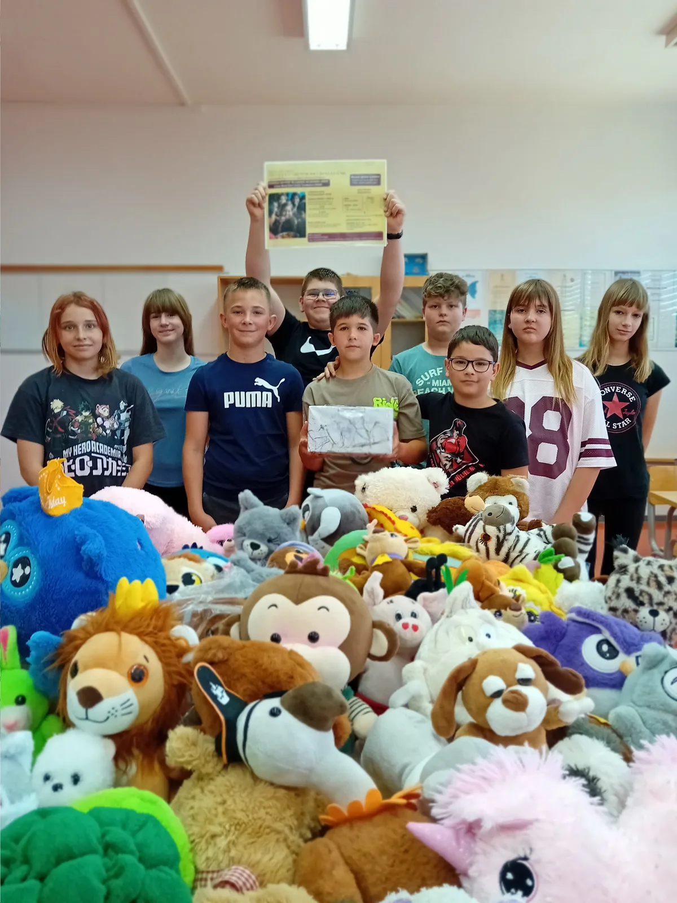
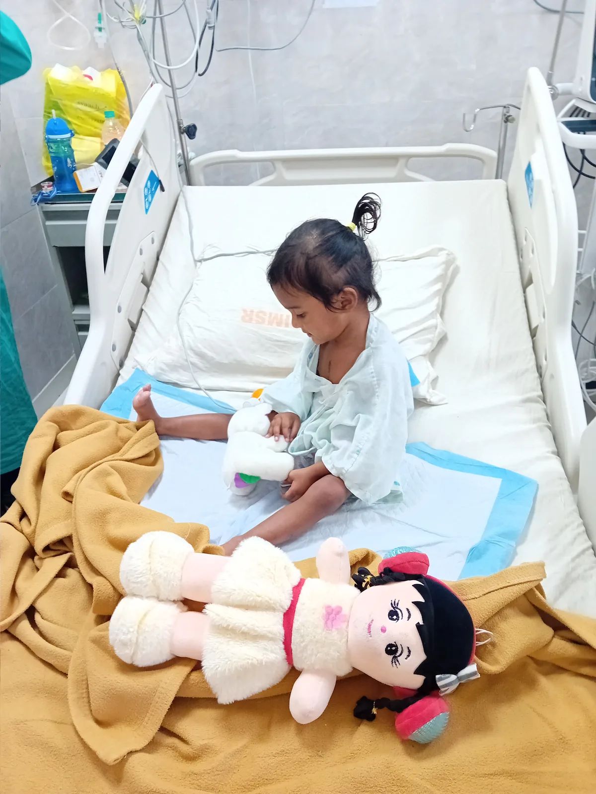
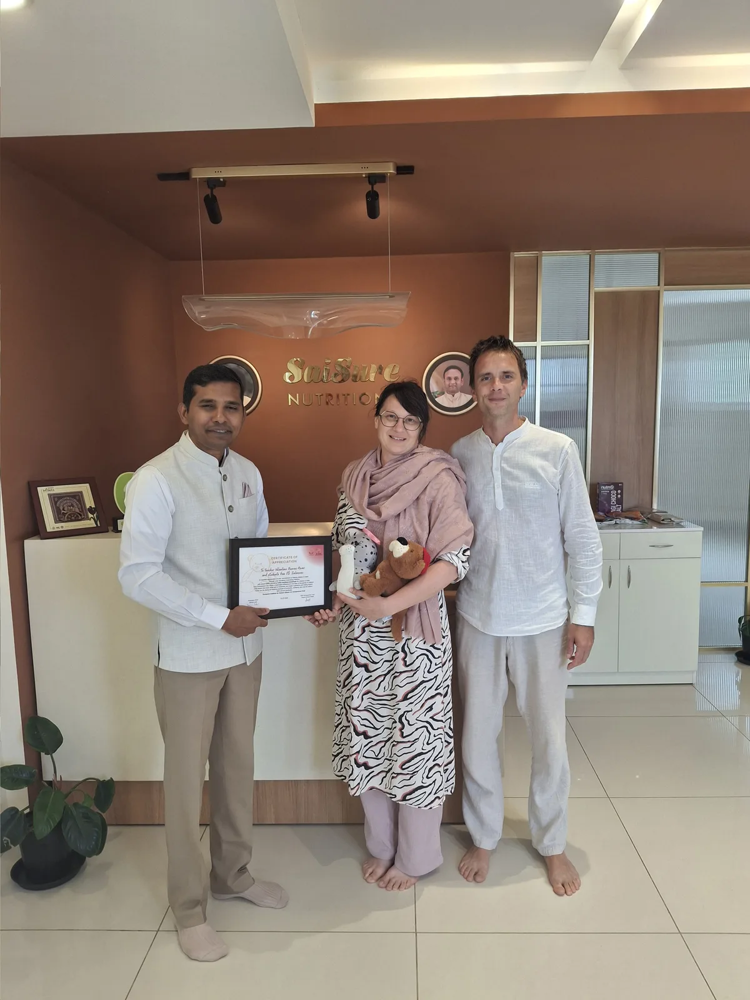
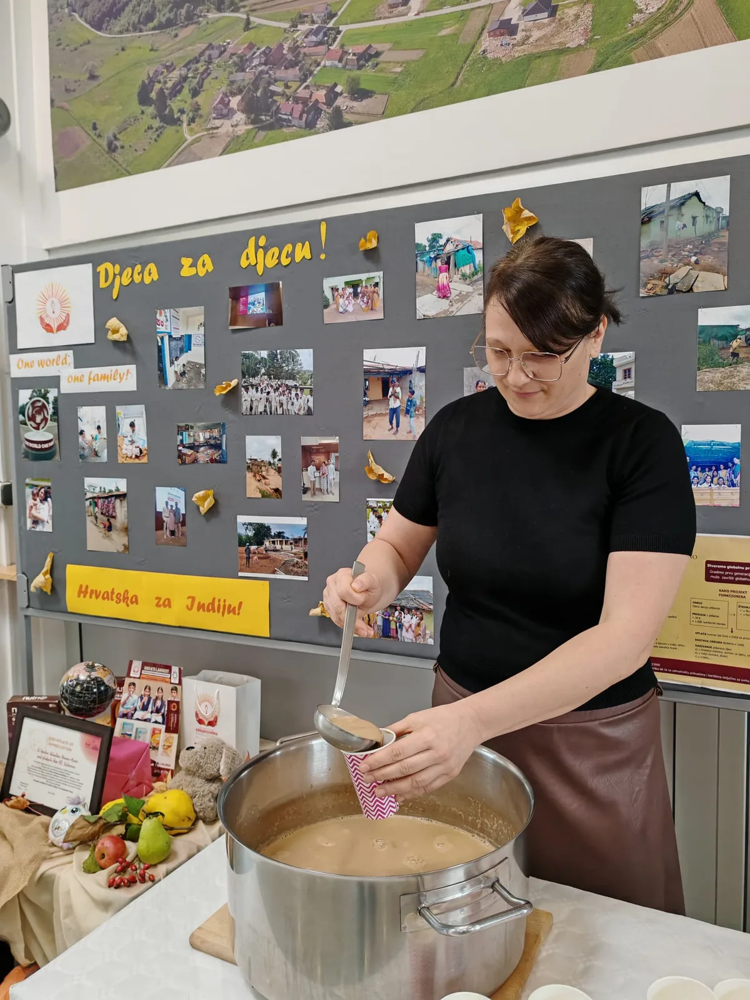
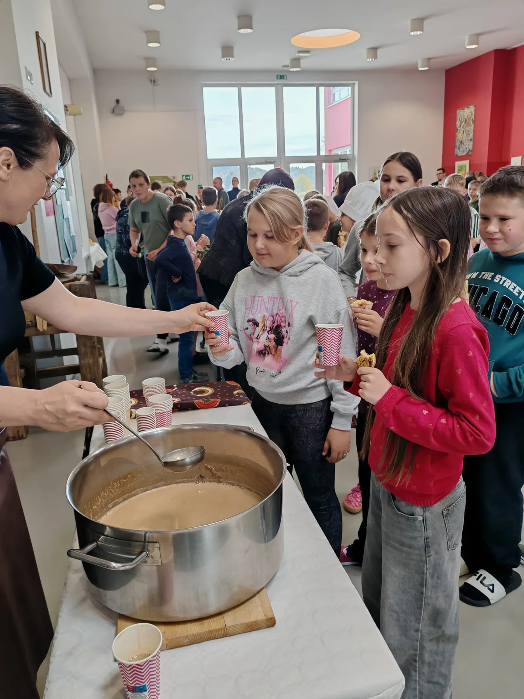
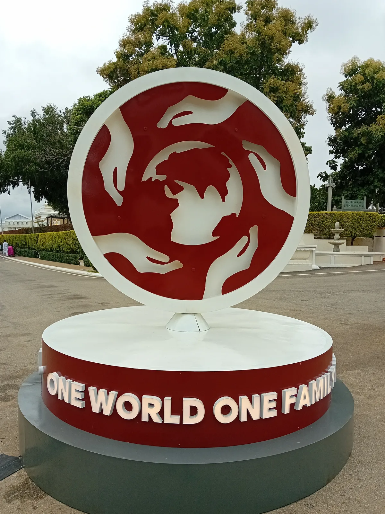

Primjer provedbe 03 · Salinovec
Djeca za djecuHrvatska za Indiju
Od razgovora o pomaganju do medvjedića i donacija: učenici iz Salinovca povezali su svoju školu s djecom u Indiji.

PŠ Tina Ujevića, Salinovec
Uz podršku vjeroučiteljice s. Ivane Husnjak i EIHV-a
Školska godina 2025./2026. i nastavak u jesen 2026.
U krugu dobrote · primjer dobre prakse
Vrijednosti koje postaju djela
Nakon edukacija Europskog instituta za ljudske vrijednosti, Valentina Posavec-Kovač pokrenula je u svojoj školi radionice o ljudskim vrijednostima. Razgovori o ljubavi, prijateljstvu, miru i nesebičnom pomaganju potaknuli su učenike da naučeno pretvore u konkretnu humanitarnu akciju.
Priče o djeci koja žive u teškim uvjetima u Indiji otvorile su pitanje: kako im možemo pomoći? Odgovor je nastao zajednički — prikupljanjem plišanih medvjedića i donacija za nutritivne obroke preko organizacije Sri Sathya Sai Annapoorna Trust.
Akcija je započela u školskoj godini 2025./2026., prije početka projektnog razdoblja 2026./2027. Ovdje je predstavljena kao primjer dobre prakse uz projekt „U krugu dobrote”, s nastavkom aktivnosti u jesen 2026.


Aktivnosti u školi
Stariji učenici pokreću, mlađi se pridružuju
Učenici od 5. do 8. razreda samoinicijativno su prikupljali donacije, odvajali dio džeparca i donosili svoje plišane medvjediće. Radionice o svjesnosti i zahvalnosti, koje je održao Mihovil Mašović, dodatno su povezale vrijednosti s iskustvom pomaganja.
Na kraju školske godine stariji su učenici akciju predstavili učenicima od 1. do 4. razreda. Objasnili su im zašto pomažu i ponudili prikupljene medvjediće uz simboličnu donaciju. Mlađi su se razveselili igračkama, a stariji su dobili iskustvo organiziranja akcije i prenošenja znanja vršnjacima.
Susret s djecom u Indiji
Pomoć stiže do onih kojima je namijenjena
U organizaciji EIHV-a voditeljica je sudjelovala na međunarodnoj konferenciji International Conference on Values Education u Indiji, 23. i 24. srpnja 2026. Tijekom boravka posjetila je lokalnu bolnicu i bolesnoj djeci osobno darovala medvjediće prikupljene u akciji.
Posjetila je i Sri Sathya Sai Annapoorna Trust, uručila prikupljena sredstva te upoznala rad organizacije koja osigurava hranu za djecu. Susreti s djecom i učiteljima iz drugih zemalja dali su akciji osobnu dimenziju i poticaj za nastavak.




Dvije vrijednosti u praksi
Suosjećanje i jedinstvo
Suosjećanje
Učenici su upoznali potrebe druge djece i odgovorili konkretnim djelovanjem: dijeljenjem svojih igračaka, odvajanjem džeparca i uključivanjem u humanitarnu akciju.
Jedinstvo
Stariji i mlađi učenici, učitelji i EIHV povezali su se oko zajedničkog cilja. Pomoć djeci u drugoj zemlji približila im je ideju da pripadamo istoj ljudskoj obitelji.
Povratak u Salinovec
Priča se vraća u učionicu
Povodom Dana kruha i zahvalnosti za plodove zemlje voditeljica je učenicima i učiteljima predstavila iskustva iz Indije. Pokazala je fotografije djece, škola i sela, a učenike su posebno razveselile fotografije njihovih medvjedića u rukama djece kojoj su darovani.
Učenici su postavljali pitanja i kušali nutritivni napitak o kojem su slušali. Zajedno su odlučili nastaviti prikupljati medvjediće i razvijati humanitarni rad, uz podršku vjeroučiteljice s. Ivane Husnjak.




Rezultati i nastavak
Što je akcija donijela?
- Učenici su organizirali prikupljanje medvjedića i novčanih donacija.
- Stariji učenici prenijeli su mlađima znanje i iskustvo pomaganja.
- Medvjedići su darovani djeci u Indiji, a prikupljena sredstva uručena su organizaciji za prehranu djece.
- Učenici su upoznali ishod svoje pomoći kroz fotografije i razgovor s voditeljicom.
- Donesena je odluka o nastavku akcije, uz želju da se proširi na matičnu školu i širu zajednicu.
Voditeljica ističe da pomaganje ne mora uvijek biti materijalno: pažnja, prisutnost, osmijeh i razumijevanje također mogu biti konkretna djela dobrote.

Misao vodilja akcije
Jedan svijet –
jedna obitelj!
Iskustvo iz Salinovca pokazuje kako razgovor o vrijednostima može prerasti u suradnju koja povezuje djecu preko granica.
Tekst je prilagođen prema izvještaju „Djeca za djecu – Hrvatska za Indiju”, Valentina Posavec-Kovač, Salinovec, 28. listopada 2026. Fotografije su preuzete iz dostavljenog izvještaja.